CAPTION2000
CAPTION2000

Saturday-Sunday 12-13 August 2000, at the Oxford Union Society, Oxford, England
Report by Jeremy Dennis
Caption 2000
2000's been a funny year, hasn't it? I keep feeling as if I'm spinning on, even though the world's ended. I can't quite get used to a future being here after all. And of course, I wasn't running Caption any more, for the first time since 1992, when we started it all out of my college room and two bright ideas. We'd passed it on to the new ones.
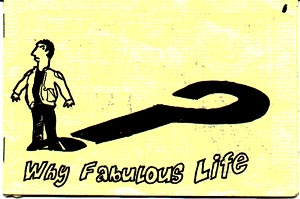 Report by Jeremy Dennis. Images by various talented individuals at the My Fabulous Life minicomic workshop at Caption 2000.
Caption is the small press, independent and alternative comics convention we've been running in Oxford for some year, and if you've not been, you really should give it a shot, because it is a lot of fun, as I found out finally this year. True, I've been to eight, but this was the first one I've ever seen when I wasn't on committee, and it's a lot more fun that way. I'd feel sorry for the new committee, but they've already been to a few, which was just as well, considering that all we'd been able to give them to run the convention with was a badly decayed mailing list, reams of conflicting advice, and the sure knowledge that we really still weren't sure what makes Caption work.
Maybe it's the sunshine -- though people always do complain that it's too bright and too hot. Maybe it's the beer, though there's not much choice even if it is very cheap. Perhaps it's the site, though the marble staircase and morris wallpaper and pictures of politicians when they were young and scary surely can't entirely make up for the stuffyness and the stairs. And then there are the panels (never my favourite bit) and the workshops (where we actually draw and make stuff) and the exhibition (my baby!) and the stalls and so on, but lots of events have those. I don't know what it is, but people have said to me, over the years, again and again, Caption's different.
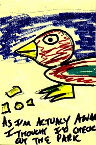And, having finally been to one, I actually think they're right.
Friday
Technically speaking, the event doesn't actually start till Saturday, but I'd been going all Thursday on preparations for the exhibition, and by Friday lunch time I was photocopying my new minicomic. Any small press person'll tell you that's not bad going. This year I was providing my services to Caption as local cartoonist -- co-ordinating the exhibition and running a Saturday workshop. The exhibition was giving me headaches. I wanted to hang the pieces from invisible thread and bent pins, but the only pins I had at home snapped when I took the pliers to them. I'd tried four of them before it occurred to me that I might put someone's eye out, mine, for example. Luckily my friend Lynn, who has red hair and sews, found me in the back of the jeans shop where we were laughing at t-shirts and explained to me that there were different sorts of pins, and that I just had to buy the right ones.
She then walked me round the corner and through a door I'd never noticed before and up a flight of stairs there was a stealth haberdashers. Fantastic! Pins bought -- now all I needed was a magnifying glass, for the condom packet.
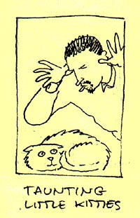I scooted home and dragged out the pritt and the glue gun for last minuite additions and repairs to the exhibition pieces, only to find Damian (my housemate, who draws stick figures and gets migraines) collapsed in bed with a flannel over his face whimpering for lucozade and a bowl to be sick in. There's no arguing with him when he's in that state, so I changed his flannel and fetched him the bowl and the sugar water... and then abandoned him to go and help with the set-up.
We'd had some sort of crazy idea about setting up the exhibition the night before, but the place (like much of Oxford in the summer) was crowded with EFL students who were having some sort of disco that night, and I didn't want to leave anything interesting in the line of sight of drunk Spanish teenagers. "What can I do?" asked Alex, new on the committee this year, a slacker-sado-masochist with floppy hair. I passed him the pliers and the pins. "You can bend these," I said.
The exhibition was called Tiny objects of fear. I unpacked it, nervously, onto the tables -- it had been bashed a bit on the bus, but most of the pieces were still more or less holding together. I plugged in the glue gun and mended what needed it. At the bottom of the bag, after all the pieces had been checked and accounted for, I find a tiny green glass bead. I can't even begin to guess where it's come from. Ian, uncompromising committee member and grim treasurer, laughs at me. "That's your tiny object of fear!" he says.
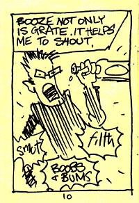Like I said, technically nothing starts till the Saturday, but the helpers and the people who want to make a weekend of it tend to fetch up down The Turf, a local pub with very low ceilings. We sit there all night and drink summer beer with stupid names and talk about comics, and the kids worry about whether anyone will turn up tomorrow while I sit there trying not to get too much beer on new comic #1, The Plot Thickens by skinny anarchist from Brighton Gavin and his harem of artists.
We try not to stay too late, so I get to watch Buffy while I'm collating the new minicomic, but between the whiskey and the Sci Fi channel it's two in the morning before I'm done collating. I'm terrible at collating.
But thankfully Gavin fits into the hole in the comic boxes I prepared for him earlier.
Saturday
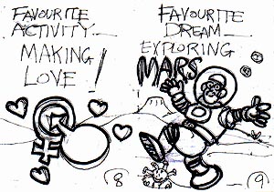We're late, inevitably. We're late and there are roadworks so we have to walk to the next busstop but the first thing we see when we get there is Gideon, a fuzzy biker classicist who always used to help us out, putting up the signs. Not my job any more! Raaaay! Of course, I do have to put up the exhibition, but that's different. More pins, for starters. And the pins hurt, when I press them in, and the invisible string keeps disappearing when I try to knot it, and on the whole, if it hadn't looked so much better than I'd imagined it would, it would have been an impossible bother. As it is, though, I can't stop grinning. And while I've been working, Howard, king of 30th Century Comics and purveyor of filth, furries, and ancient Jimmy Olson comics, has turned up and this year he's brought dozens of scary Christian comics. Before the weekend is out, we'll all have shuddered out way through Little Hansa who loved the Swastika.
Downstairs, Jenni, the beautiful blonde founder of Caption, is holding court in the bar, and Pete, comics-into-bookshops activist and the man behind Bugpowder, has covered his stall with frighteningly desirable books and comics and cds, many of them by James Kochalka. But the garden's demanding my attention. It's full of lovely comics, sun, and beer, and anyway, I want to try out my new action man camera. I buy a pint and zimber out. The sky's blue.
Outside we compare cameras and talk. The camera thing's funny. Maybe we all really want to do photo love stories. We have more beer, and (another) Jenni, a stylish fan-friend from London, gives me some cake. The afternoon slides by. Presumably there's a programme going on inside the building somewhere. Lateish I get restless and wander in to see what's going on. There are people I don't know drawing pretty pictures in the bar, (another) Pete, Slab-O-Concrete publisher from Brighton, has a table of neat stuff set up, and the workshop is full of people making voodoo dolls out of pipe cleaners and goggly eyeballs. And tarot cards. Lots of tarot cards. Luckily there's a psychologist in the room keeping an eye on them; Ruth, the committee member with the amazing red curly hair.
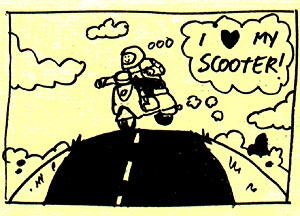It's auction time before I know it. I've got some stuff in it, but I've had a few years practising coping with seeing my stuff auctioned. Not so some of the people here. One of the Monostark boys (strange yet lovely cartoonists from Bristol) is videoing the cringes. It must be art. As usual, the food turns up before we're finished.
We eat revolting pizza and slug back nice wine in the garden. The pizza's pretty icky, but I don't particularly mind. I never like breaking conventions for meals, I hate the palaver of finding a restaurant, I'm more interested in the wine, and anyway I'm being subjected to embarassing quantities of praise from Andrew, who looks eerily like one of my prettier cartoons come to life. The squirrels fight for our entertainment in the gathering dusk, and Jenni, perhaps inspired by their viciousness, starts thumb wrestling a variety of variably manly opponents. Before things get out of hand, there's a scramble to finish the auction. I only buy one thing -- a video of Chris de Burgh live.
The auction raised heaps of money for the Cartoon Art Trust, about £500, I think. It'll go to courses and workshops, that sort of thing. Then we head back to the bar, leaving Jenni still thumb-wrestling men into submission, and the garden lightly festooned with smouldering video tape.
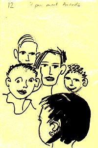Last stop of the evening is The National Theatre of Earth Prime, whose poorly-rehearsed and often incomprehensible antics are always saved until everyone has been in close proximity to a very cheap bar for the maxmum possible hours. Usually Mark (tall and lugubrious), Penny (sleek and Nikitaesque) and Jason (a patent lawyer), at least manage to pick a comic to desecrate, but this year even that seemed beyond their grasp, and instead we had to settle for The Matrix, complete with amazing special effects, a full compliment of leather trousers, and caption cards, to help poor Keanu get those more difficult emotions across to the audience.
And sometime later I think we went home, though my last really coherent memory is of Andrew backing me into the corner demanding that I drew him filth, filth and more filth!
Sunday
Sunday starts very grim. I have a black hangover and staying in bed is almost as horrible as getting up. I ooze towards a cheese-and-pickle sandwich breakfast, trying to remember what I need to bring today. Mmmmer, comics, tippex, magic markers, prozac. I think I've remembered everything. We're due on a panel at noon. Alex is going to regress us so that we remember what happened at last century's Captions. I'd rather forget about Caption altogether and crawl into bed for an all-day hangover. I pour more water over my head and open the front door. And shut it again. Sunglasses.
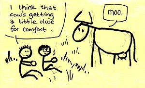Try again.
Sometime after noon we wobbled off the bus, the phone vibrating as we strode down Cornmarket Street, dodging henna tattooists and hair-braiders and early string quartets. It's Alex, "Where are you?" he asks. "Door," I say. It looks like I'm down to one syllable sentences, and that's not going to be much fun for the people watching me getting regressed. Alex is still going, "Huh? But eventually he lets me know that the door is open, the gate is open, and I get in, only to find that the bar is closed.
Sat there, twisting my fingers, waiting for coffee I don't really want, and no-one'll miss this stupid thing if it doesn't happen, and reaching for a pen to maybe draw something and then putting it down. More and more people building up at the bar and reminding myself and reminding myself that it's not my fault any more. Remembered that I was running a workshop that afternoon, groaning inwardly and wondering why I'd ever said yes to that one, oh god.
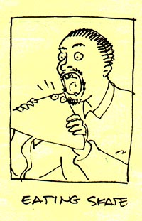And oh fuck I forgot the stapler. And the guillotine, oh and everything probably. And I really don't want to be regressed.
On the bus, going home again. Dark in my house, all peaceful on my own, and then Terry called from A&E. Terry's one of the gratuitous bunnies who make Sleaze Castle, and he's there with Dave, the other bunny, the sullen one, and Dave's destroyed arm. Amidst the excitement of the mass thumb-wrestling and squirrel-taunting in the garden the night before, Dave had initiated Pete Bugpowder into the Church of Bob and in a moment of enthusiasm, Pete had flung himself (in a strictly platonic way) into Dave's arms, tumbling him heavily down onto the rock-hard ground. The arm landed first and we fed him codeine and bad advice until he went back to his hotel room in disgust. The arm, it seemed, was as bad this morning as it had been the previous night. "The waiting list is down to four hours," he says, "So we might make it back in time to say goodbye to everyone."
Chastened and put back into perspective I went back to the convention with a rucksack full of stapler and guillotine, where the bar is open and Alex buys me a great deal of gin. I'm improving fast. I might even try a panel.
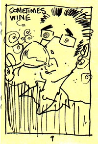These questions make no sense. Why is this person going on about that? Yes, we know. Yes, we know. Oh for fuck's sake. Well, I'm trying not to take this personally. Oh NO -- not again! Oh come on mate, finish that sentence. I'm not going to say anything. I'm not going to say anything. Fuck I said something. Not again, pleease.... Yes, we know. What has that got to do with comics? What has that got to do with any of us? What has that got to do with anything? Not now, talk about that somewhere where I can't hear it. What is that supposed to mean? Yeesh. If you're going to talk bollocks why do you have to be so DULL about it? Oh come on, we just had that discussion. Oh no, not again... These questions make no sense. Why is this person going on about that? Yes, we know. Yes, we know. Oh for fuck's sake. Well, I'm trying not to take this personally. Oh NO -- not again! Oh come on mate, finish that sentence. I'm not going to say anything. I'm not going to say anything. Fuck I said something. Not again, pleease.... Yes, we know. What has that got to do with comics? What has that got to do with any of us? What has that got to do with anything? Not now, talk about that somewhere where I can't hear it. What is that supposed to mean? Yeesh. If you're going to talk bollocks why do you have to be so DULL about it? Oh come on, we just had that discussion. Oh no, not again... These questions make no sense. Why is this person going on about that? Yes, we know. Yes, we know. Oh for fuck's sake. Well, I'm trying not to take this personally. Oh NO -- not again! Oh come on mate, finish that sentence. I'm not going to say anything. I'm not going to say anything. Fuck I said something. Not again, pleease.... Yes, we know. What has that got to do with comics? What has that got to do with any of us? What has that got to do with anything? Not now, talk about that somewhere where I can't hear it. What is that supposed to mean? Yeesh. If you're going to talk bollocks why do you have to be so DULL about it? Oh come on, we just had that discussion. Oh no, not again...
Why do I go to panels? My workshop's right now and I've seldom felt less able to tell a roomfull of adults what to do. I try to remember when I last ran a workshop. It's like trying to remember when I last had sex, I know it happened but it's never there being reassuring when you need it ,in fact, the only times I can think of are the ones where everything went wrong and everyone was bored and I fetched up feeling like a complete fool. The workshop's called My Fucked-up Life. Cue hollow laughter.
My Fucked-up Life. Who thought of that? The pen twists in my hand. Perfect line, colours that shine. "Shall I announce the workshop?" asks Ruth. Looking at art, back to the start. "Do you want a drink", says Damian. Pint of gin, dreaming of sin. I've not idea what I was planning to do. Tiny comic, gin and tonic. "Jeremy?"
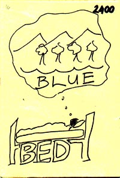"Yeah," I say, "announce it. No, I'll announce it. No, you announce it. But it's not My Fucked-up Life anymore, okay? It's My Fabulous Life."
Later. The bar. The workshop went okay. Here for the duration, the convention disassembling around me, nice just to sit here and talk. Gentle rain falling just in time to catch the stallholders going home, but they did okay, no-one's too sad, except Pete who tells me, "Maybe it's had it's day." Caption, the convention that won't lie down and die, lurches awkwardly to a close around us, uncomfortable goodbyes and anxious determinations, must make a comic, must organise an event, must get in touch, must sort out my website...
The new committee plus mates and hangers wander off for curry to say thankyou and goodbye first. The numbers lurch up and down and the restaurant hates us, not surprising considering that we're all sweating beer by this stage and almost too tired to sit down. We stow the flip charts in the corner and try to remember what we ordered. I can't believe I didn't just go home. Then one Jenni has to go home but the other Jenni has a much better idea. "You should come back to hotel for a drink," she says, "They've got carp."
Later and later, sat there in the soft green Galaxie, drinking champagne and eating chips and kebabs and talking about superheros and sleep and nothing and listening to the rain falling into the deep pool in the dark garden where the carp float like the lost reflections of dying red suns.
Disclaimer: This report was compiled during a week of complete sobriety following the excesses of Caption, and may not accurately reflect my usual state of mind.
Contacts
- Email:
caption2000@alleged.demon.co.uk - Fax: 08701 640622
- Post: 18 Hawkins Street, Oxford OX4 1YD, UK
|